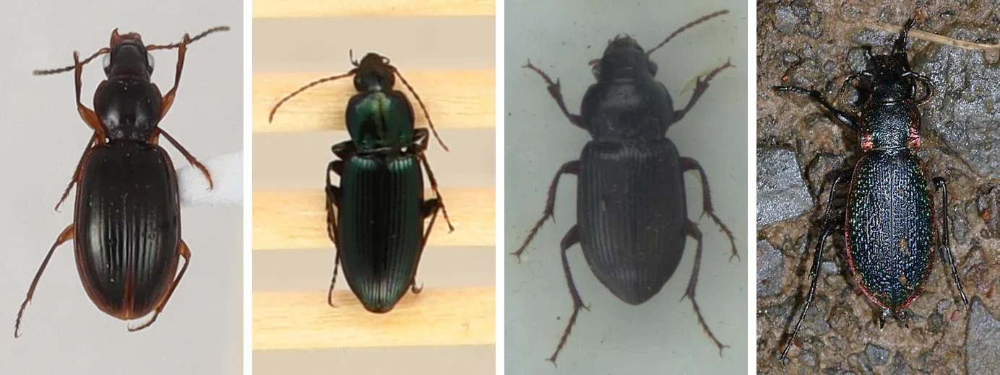
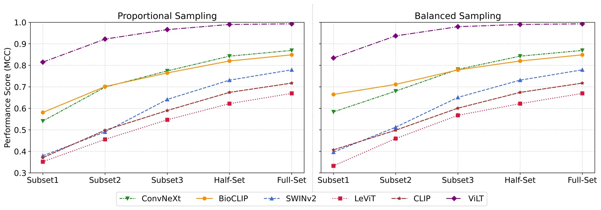

Visual question answering for biology
How finely do VLMs see living things? A 1.86M-question benchmark of classification, grounding, counting, measurement and identity.
1 paperExplore this areaI study vision-language models through visual question answering: what they see, what they retrieve, and when they should answer, in biological and biomedical domains.
PhD student in Computer Science
Rensselaer Polytechnic Institute, DAMI Lab
Open to opportunities
Research internships and collaborations
I am open to research internships, industry collaborations and research-focused roles in multimodal AI, vision-language models and retrieval-augmented generation. If my work fits what your team is building, I would be glad to hear from you.
Get in touchHover over or tap a panel to run it.

I am a PhD student in Computer Science at Rensselaer Polytechnic Institute, advised by Yao Ma and Charles V. Stewart in the Data Analytics and Machine Intelligence (DAMI) Lab.
I work on vision-language models and visual question answering in biology and biomedicine, two domains where fine-grained detail and checkable facts show exactly where models fail. I built Bio-VQA (WACV 2027), the largest biological VQA benchmark, with 1.86M questions across 18 VLMs, and co-authored an audit and repair of knowledge-based VQA benchmarks (ECCV 2026).
My current work is retrieval-augmented and agentic QA over knowledge graphs: what a model should do when a retrieved page names only part of the answer, and why biomedical text and the models trained on it under-report drug safety facts. Earlier, I benchmarked vision encoders for fine-grained recognition and built the detection pipelines and validated image datasets behind this work, including one in Nature Scientific Data.
Benchmarks, methods and datasets, each with results, figures and citations.


The largest biological VQA benchmark: 1.86M questions showing where 18 VLMs fail at counting, measuring, localizing and identifying organisms.
View project page
Auditing and repairing E-VQA and InfoSeek, then adding distractor entities, changes how retrieval-augmented VQA systems rank.
Read about this work

What a retrieval-augmented model should do when a page names only the answer's family, and why text and models leave out drug contraindications.
Read about this work


A 1,769-class recognition benchmark, a continental-scale image dataset with validated traits, and detection and segmentation pipelines.
View project page
Identify the organism in an image, follow a biotic interaction in GloBI to its predator or prey, and answer from that partner's traits. A benchmark and agentic retriever in preparation for the KDD Datasets and Benchmarks track.
Read about this workHow finely do VLMs see living things? A 1.86M-question benchmark of classification, grounding, counting, measurement and identity.
1 paperExplore this areaRetrieval-augmented QA that is measured correctly and knows what to do when its evidence is only partial, from open-domain KB-VQA to knowledge graphs.
3 papers, work in progress
Which vision encoders separate 1,769 near-identical classes, how many labels they need, and where domain shift breaks them.
3 papers
Open-vocabulary detection, segmentation and VLM verification at scale, and the validated datasets they produce.
4 papers, 2 datasets
Recognizing the same individual across camera views and time.
1 paper, 1 dataset
Earlier work: depth-based hand-keypoint recognition and the first complete Bangla Sign Language dataset.
2 papers, 1 dataset1.86M questions over 217K images across taxonomy, fine-grained attributes, spatial reasoning and re-identification, with every per-item model answer and Bio-VQA-Lite, a 12K-question sample for low-cost evaluation.
Pinned carabids from NEON's Hawaii site: 162 group images, 1,614 individual specimen crops and 1,579 trait rows across 14 endemic species, with caliper and image-based elytra measurements.
Ethanol-preserved carabids from 30 NEON sites: 577 group images, 11,654 individual specimen images and 39,064 elytra measurement records, plus segmentation train and test splits.
Census imagery of endangered Grevy's zebras for individual re-identification, detection and classification, with initial and final identity metadata.